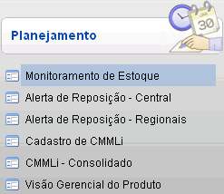
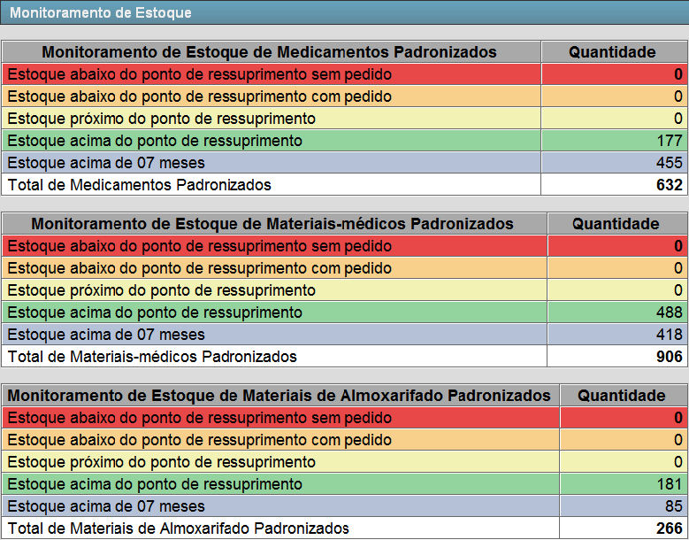
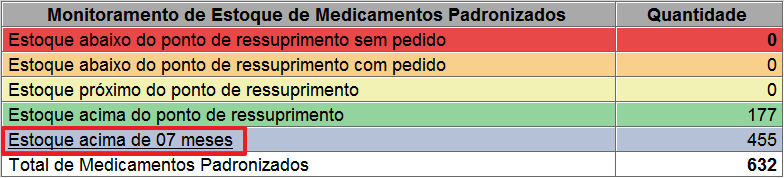
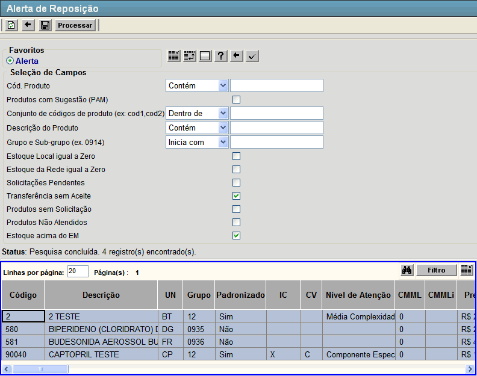
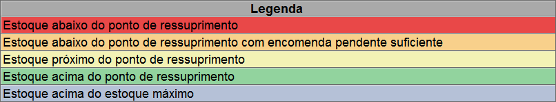
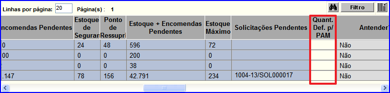
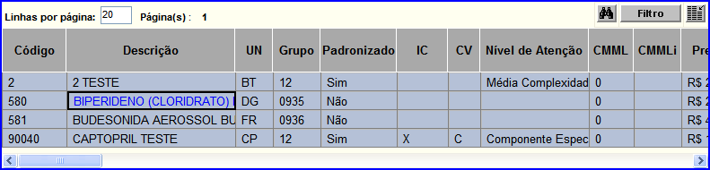

Monitoramento
de Estoque [ Voltar
] Utilize esta
tela para consultar a posição de estoque atual dos produtos na rede.
Informações como estoque atual, mínimo, máximo, ponto de ressuprimento,
sugestão, encomendas pendentes, estoque virtual, entre outras
informações úteis ao planejamento, são acessíveis por meio desta tela.
O formulário "Monitoramento de Estoque"
encontra-se dentro do menu "Programação - Planejamento".

Após clicar no formulário, a seguinte tela será aberta:
Esta tela,
que é atualizada a cada minuto, é divida em três seções. São elas:
- Monitoramento
de Estoque de Medicamentos Padronizados;
- Monitoramento
de Estoque de Materiais-médicos Padronizados; e
- Monitoramento
de Estoque de Materiais de Almoxarifado Padronizados.
1º Passo: clique em um dos links disponíveis na tela para acessar o estoque correspondente. Clique em um dos links desejados para visualizar os dados detalhados do
tipo de estoque selecionado. Por exemplo, para estoque acima de 07 meses, clique no link de mesmo nome.

Observação:
as seções "Monitoramento
de Estoque de Medicamentos Padronizados" e "Monitoramento
de Estoque de Materiais-médicos Padronizados" contém dados de farmácia,
enquanto a seção "Monitoramento
de Estoque de Materiais de Almoxarifado Padronizados" contém dados de
almoxarifado. Dependendo do local atual do usuário e do tipo de
informação que este deseja acessar, o sistema irá alterar
automaticamente o local do usuário. Neste caso, uma mensagem do sistema
alertará o usuário da troca de local.
Ao
clicar em um dos links você será redirecionado para a tela de "Alerta
de Reposição". Os filtros estarão configurados de acordo com a opção
que foi selecionada conforme imagem a seguir.

A tabela de resultado desta tela exibe as seguintes informações:
- Código. Código do produto no sistema;
- Descrição. Descrição completa do produto;
- UN. Unidade de medida cadastrada para o produto;
- Grupo. Grupo de produtos ao qual o produto pertence;
- Padronizado. Aqui é indicado se o produto é padronizado ou não;
- IC (Índice de Criticidade). Classificação do produto conforme seu grau de criticidade em relação a sua importância e substituibilidade;
- CV (Curva de Valor ABC). Os produtos do estoque são separados em três categorias em função do
valor total e da representação em relação ao valor total do estoque. Os
produtos classificados com A possuem os maiores valores de estoque, enquanto os produtos B possuem valores intermediários e os produtos C são classificados como de baixo custo;
- Nível de Atenção. Aqui é informado a necessidade de atenção que o produto deve receber;
- CMML (Consumo Médio Mensal do Local). Trata-se da quantidade do produto que é consumida mensalmente no local onde o usuário se encontra;
- CMMLi (Consumo Médio Mensal do Local Informado). Trata-se da quantidade informada pelo usuário do produto que é consumida mensalmente no local onde o usuário se encontra;
- Preço Última Compra. Aqui é informado o valor do produto na última compra;
- MOV (TRF) (Movimentações de Transferência). Indica todas as movimentações de transferência realizadas no local onde o usuário se encontra;
- CMM (Rede) (Consumo Médio Mensal). Trata-se do consumo do produto mensalmente na rede;
- Estoque NUMAB. Aqui é informado a quantidade disponível do produto no estoque da NUMAB;
- Estoque GEMEX. Aqui é informado a quantidade disponível do produto no estoque da GEMEX;
- Estoque Rede. Aqui é informado a quantidade disponível do produto em toda a rede;
- Cobertura de Estoque - Centrais. Tempo (em dias) em que o estoque médio será suficiente para suprir a demanda média do produto nas centrais;
- Cobertura de Estoque - Rede. Tempo (em dias) em que o estoque médio será suficiente para suprir a demanda média do produto em toda a rede;
- Encomendas Pendentes. Ordens de compra já processadas cujo recebimento está pendente;
- Estoque de Segurança. Corresponde à quantidade mínima desejável em
estoque para este produto, com fins de prevenção a incertezas
de fornecimento edemanda;
- Ponto de Ressuprimento. Quantidade do produto no estoque que indica a necessidade de realizar novas aquisições. O cálculo deriva da
soma: Estoque de Segurança + (Demanda Mensal do Produto x Tempo de
Ressuprimento);
- Estoque + Encomendas Pendentes. Quantidade de produto no estoque local + a quantidade de produtos que faltam recebimento;
- Estoque Máximo. Consiste na maior quantidade admissível em estoque;
- Solicitações Pendentes. Aqui é listada todas as solicitações de transferência do produto que necessitam ser processadas;
- Quant. Def. p/ PAM. Informe neste campo a quantidade desejada para realizar uma solicitação de aquisição;
- Atender?. Neste campo é informado se será ou não atendido o pedido de aquisição;
- Ata. Aqui são listadas todas as atas referentes ao produto;
- Saldo na Ata. Quantidade máxima do produto permitida por ata;
- Vigência das Atas. Período de tempo em que a ata é válida;
- Nº PAM. Número dos Pedidos de Aquisição de Materiais referentes ao produto;
- Nº Processo SICOP. Número do Processo relacionado ao PAM;
- Nº AFM. Número da Autorização de Fornecimento de Materiais;
- Nº Empenho. Número do Empenho referente a AFM;
- Data de Entrega dos Empenhos. Data acordada de entrega dos emprenhos;
- Fornecedor. Aqui são listados os possíveis fornecedores do produto;
- Detentor Atual do Processo SICOP. Preenchido via integração com o SICOP;
- Nº Solicitação (sem transf). Número das solicitações que não possuem uma transferência associada;
- Nº Transferência (sem aceite). Número das transferências que não foram aceitadas;
- Observações GEAB. Adicione aqui quaisquer informações adicionais sobre a Gerência de Abastecimento;
- Observações Programação. Adicione aqui quaisquer informações adicionais sobre a programação;
- Estoque Total do Proprietário. Quantidade total em estoque e disponível para consumo no local onde o usuário se encontra;
- Dias Abaixo do PR. Quantidade de dias que o produto se encontra abaixo do Ponto de Ressuprimento;
- Sugestão. Cálculo de reposição sugerido pelo sistema. O cálculo principal da
sugestão consiste em: Estoque Máximo - Estoque Virtual + Estoque de
Segurança. Porém, este cálculo pode ser sobreposto ao cálculo de
parâmetros de reposição para o Local e para o Produto. A hierarquia de
sugestão é: Produto > Local > Rede;
- Observações. Adicione aqui quaisquer informações adicionais referente ao monitoramento de estoque;
- Estoque Virtual. Trata-se do estoque local atual mais as encomendas ainda não recebidas;
- Demanda Agregada.
- Sugestão c/ Demanda.
- Cobertura de Estoque (Dias). tempo (em dias) em que o estoque médio será suficiente para suprir a demanda média do produto no local.
2º Passo: configure os filtros para localizar determinado tipo de resultado ou produto específico. Observação: Na
seção "Legenda" na parte inferior da tela, o usuário tem uma legenda de
cores para interpretação dos resultados da pesquisa. Ainda, para listar
exclusivamente produtos em determinada situação de estoque, clique na
legenda desejada. 
3º Passo: informe a quantidade do produto para realizar uma solicitação de aquisição. Definida a quantidade no campo Quant. Def. p/ PAM, conforme imagem abaixo, logo após clique no botão  [Processar], você será redirecionado para a tela de solicitação correspondente. 
4º Passo (Opcional): clique na descrição do produto. Você
será redirecionado para a tela "Consulta de Estoque por Produto", esta
tela permite ao usuário pesquisar a quantidade de itens do produto no
estoque.

Ir para o topo da página |